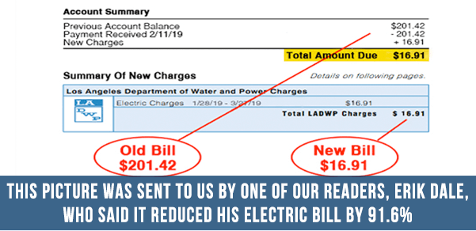
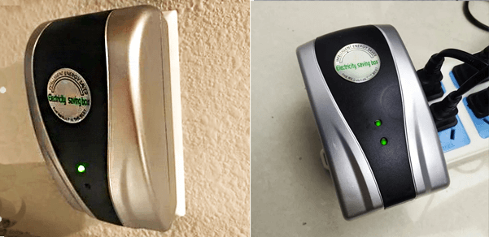

BREAKING: Clever New Tech Slashes Your Electric Bill in Half
It is no secret that the price of electricity is steadily increasing each year, but thanks to this new Nikola-Tesla-inspired technology, consumers can save hundreds to thousands of dollars every year on their electric bills.
Just this year, a new study suggested that most Americans are overpaying for electricity by a whopping $27.6 billion dollars per year.
It's very apparent that we as Americans have an energy crisis—a lack of energy from lawmakers and the Public Utility Commission about fixing the crooked business of selling overpriced electricity to consumers.
Both sides are giving each other cover to do nothing. Just this year, the Public Utility Commission sent lawmakers a report about the glorious, incredible, fantastic electricity shopping system it regulates. A problem? Not on their watch.
Lawmakers who get that report from the state regulators can say, "Everything is fine. We don't need to make changes."
Lawmakers refuse to introduce an electricity bill that is designed to end the deceptive marketing practices that power companies use to reap massive profits every year.

The system remains a horror show of confusion, duplicity, and unnecessary complications. There's no reason why electricity companies should get the better of regulators and consumers, but they do it time and again.
If you look at descriptions of more than 300 electricity plans from 55 companies, you see a jumble of garbage language, terms, conditions, and small print—your eyes bulge. And you won't learn your exact price until the bill arrives.
Why does this matter? This duplicity leads to you paying more.
Electricity companies also confuse shoppers with tiered pricing—different rates for different usage levels—but they make sure that the lowest prices to show up early in search results.
So, to cut a long story short, Big Energy is running a massive racket, and as long as they are not regulated, they'll continue to get away with it.
But the war isn't lost for the ordinary consumer. Thankfully, clever new technology can help average consumers reduce their electric bills by up to 90% month after month!

A German-based startup company has come up with a new innovative and inexpensive gadget that helps you not only lower your electric bill, but can also increase the lifespan on expensive household appliances. Within just one month, the device would pay for itself.
What is This Device?
It's called PowerVolt and its tech was originally created by no other than the legendary Serbian-American inventor, electrical engineer, mechanical engineer, and futurist, Nikola Tesla.
Initially it was concealed from the general public because it offered average families the opportunity to save on their monthly energy costs. PowerVolt is a small, compact, affordable, and easy-to-use plug-in unit that stops unnecessary power from entering the electrical cables and overloading the network.
PowerVolt is your power company's worst nightmare. They have been trying to hide PowerVolt from the everyday consumer and have even banned it in retail shops.
Big Energy is threatened by this device and its potential to cut into profits.
However, thanks to the Internet, the secret is out, and everyday people are now reaping the rewards of less power consumption overall, as well as that used by household appliances.
The bonus? Your standard blender, microwave, vacuum, or any other household appliance may last longer.
In essence, PowerVolt provides the opportunity for you to save up to 90% on your energy bill. That's a phenomenal savings and makes it easy to understand why Big Energy wants this device hidden from consumers for good.
The benefits of PowerVolt are unparalleled, and researchers are convinced this device could spell the end of unaffordable power bills that can cripple the average wage-earner at the end of the month.
Scientists initially spent many months trying to debunk claims of efficacy, but those studies now prove that PowerVolt should be commonplace in every household.
How Does it Work?
It's easy to connect, simply plug into the outlet closest to your breaker box. That is all you need to do, once plugged in the green LED indicates it is powered on and working.

If your home is large it is beneficial to place 1 unit close to the breaker box and another as far away from it as possible. It is as simple as that. and it's suitable for both standard homes and apartments connected to an electrical grid.
Once you've plugged it in, PowerVolt will get to work. Within a few days, it will begin to make efficient use of your energy while allowing you to reap the rewards of a more robust household appliance lifecycle. In just a short time, you will have made your money back on your initial purchase.
Appliances always draw more power than they need to run due to inefficiencies and noise on the sine wave.

PowerVolt reduces this noise therefor decreases the amount of electricity wasted. It does not change what the meter reads or steal extra power from anywhere, it just uses the energy more efficiently therefor needing less of it.
Can Big Energy Actually Stop This?
Now that you know the first truth—that power companies massively overcharge their customers—you should also know the second truth (one that almost no one is aware of): your utility company's power is overloading circuits and shortening the lifespans of your expensive household appliances in the process.
So, you're set to lose more than just money from your wallet. When PowerVolt was discovered overseas, power companies then spent millions (likely your money from years of overpaying) to stop the product from reaching retail store shelves.

It would spell the end of their profiteering, so it was important that they kept it out of the public eye.
However, the questionable legality of such a move put a stop to this, and now close to 150,000 households worldwide are experiencing lower power bills, all because of an inconspicuous plug-in device.
Is This Device Actually Legal?
PowerVolt is absolutely 100% legal; you're at no legal risk for owning this excellent electricity-saving device because simply put, you're not breaking any laws.
Of course, power companies are not happy with the situation, so they are trying their best to hide PowerVolt from the public eye.
How Much is it Going To Cost Me?
You're probably thinking, given what this tech can do, it probably has to cost a fortune. False! PowerVolt is on sale at the moment for under $40!
Make sure you get yours while you can, due to recent media attention and mounting pressure from Big Energy, these handy little gadgets may become impossible to find in the near future.
Where Can I Buy This Device?
You can buy it directly from the company's partner website by clicking here.
Lower Your Energy Costs
Now that you've been informed about this brilliant invention, we're pleased to announce the company has allowed us to give a special discount to all of our readers. To get your special discounted pricing all you need to do is to follow these 3 steps:
-
Step 1: Order PowerVolt today to take advantage of the special discount.
-
Step 2: When you receive it, open the package and plug it into your wall.
-
Step 3: Once plugged in, give the device some time to optimize your electricity use.
Here's a tip: PowerVolt is a great gift because it will save everybody who receives it a ton of money!